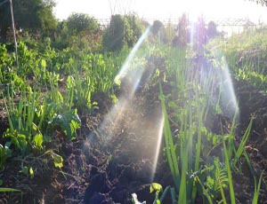
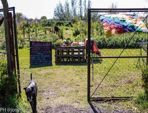

Jadir Orlando Rojas Gomez
Estudiante de la carrera de Diseño de Imagen y Sonido en la Facultad de Arquitectura Diseño y Urbanismo
Materias en curso
Huerta Agroecológica Morón SurCo
Morón SurCo es un emprendimiento asociativo que funciona en el Espacio de Agroecología Urbana de Morón.
 INFORMACIÓN ACADÉMICA
Universidad de Buenos Aires
- Rector: Prof. Dr. Alberto Edgardo Barbieri
- Secretario General: Dr. Juan Pablo Más Vélez
Facultad de Arquitectura, Diseño y Urbanismo
- Decano: Arq. Guillermo Cabrera
- Vicedecano: DG Carlos Venancio
Diseño Grafico Por Computadora
- Cátedra: DG Martín Díaz Cortez
- Adjuntos: DG Anibal Ocampo
- JTP: DG German Diaz Colodrero
- DG: Anibal Guebel
- Docentes: Rita Rodríguez Álvarez y Milagros Pierin